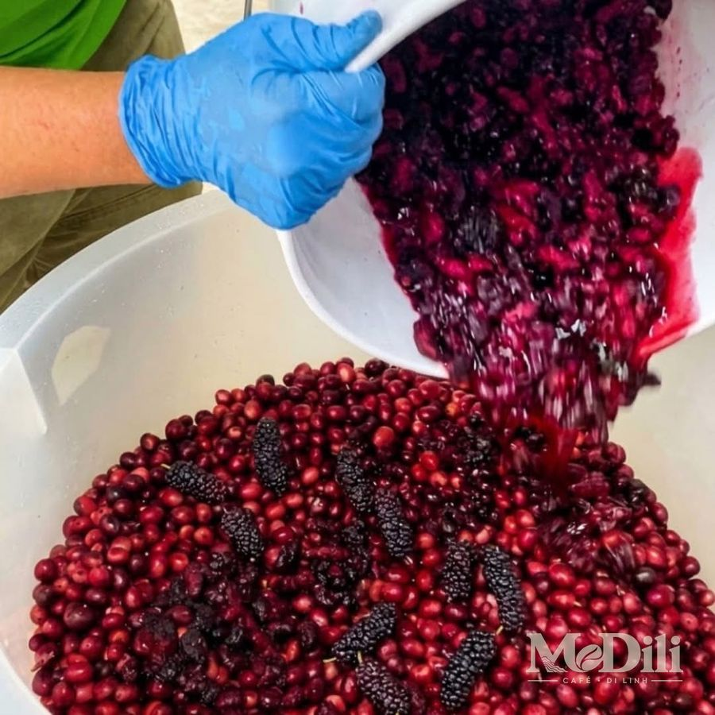
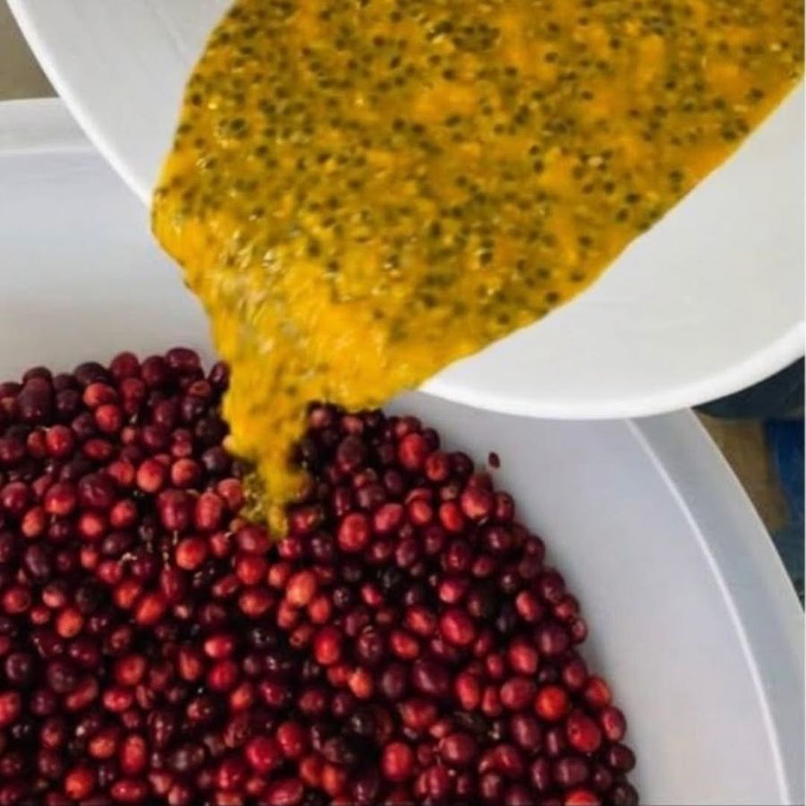

The Fruit Co-fermentation Machine
Coffee co-fermented with fruit in a sealed tank, as Washed, Honey or Natural. Choose a fruit, drag the ratio, watch pH and Brix change, then use the batch sheet for a 20 kg trial at the MeDili farm.
Real photos
Ripe coffee cherries co-fermented with longan, mulberry and passion fruit.



Figure 2 is calculated from the weight, processing method and yeast dose on the control panel. Loss rates, water and area are planning estimates and need re-weighing after the first batch.
The written procedure: a version for the farm
There is no common standard for fruit ratios yet. The figures below are trial benchmarks for the MeDili farm, compiled from references, and need adjusting through trial batches.
Calculate the batch and print the sheet
Enter the cherry weight. Yeast dose, temperature and time come from the control panel above.
Tank volume, CO₂ and green coffee yield are estimates. The cherry-to-bean ratio needs checking against the farm's own scale.
Try 4 buckets in one picking day
Co-fermentation spoils more easily than regular fermentation, because the fruit brings extra sugar and microbes.
- Divide 80 kg of cherries from the same lot evenly into 4 food-grade plastic tanks with one-way valves, 20 kg each.
- Tank A has no fruit and serves as the control. Tanks B, C and D get 5%, 10% and 20% fruit, all of the same kind.
- Measure pH, Brix and temperature every 6 hours. Stop at pH 4.0–4.4; don't let it fall below 4.0.
- Dry and rest them separately, roast them on the same profile, and blind-taste them against tank A.
- Keep only tanks that are clearly better than the control. If they taste the same, the fruit isn't worth the extra cost.
Safety limits
- Clean fruit. Discard bruised fruit, wash thoroughly and sanitize following food-safety procedures, because fruit skins can carry residues and mold.
- Use real fruit. No flavorings or essential oils. If you use them, the product is no longer co-fermented.
- Tanks with one-way valves. Fruit makes the batch produce more gas, so don't seal it airtight. Ventilate the tank room.
- Mold, rotten or paint-like smells: discard the batch; drying won't save it.
Labeling and selling
This is what decides customer trust.
- State clearly on the package: “Co-fermented with [fruit name]”, with the ratio and processing style. Disclosing this information is a good practice recommended by the specialty community.
- Don't call it the variety's natural flavor. Fruit coffee is a separate line, apart from the pure Di Linh origin line.
- Allergies: if you use fruit that commonly causes allergies, add a warning.
- Competitions: Cup of Excellence does not accept fruit, spices or non-microbial additives. Check the rules before sending samples.
- Vietnamese regulations: ask the agency that receives product declarations whether the fruit must be listed as an ingredient, because the international references MeDili found don't agree.
When a batch goes off course
| Sign | Common cause | What to do |
|---|
Compiled from multiple sources. The machine's shape is a design concept. MeDili has not found a standard rate for fruit ratios, so the 5–20% ratio, the 24-hour starter and the fruit pH values are trial benchmarks, not measurements from Di Linh. The curves are an illustrative model.
The Di Linh-origin coffee brand of MeDili Coffee Farm. Contact us on Zalo to ask about coffee and brewer's yeast fermentation.